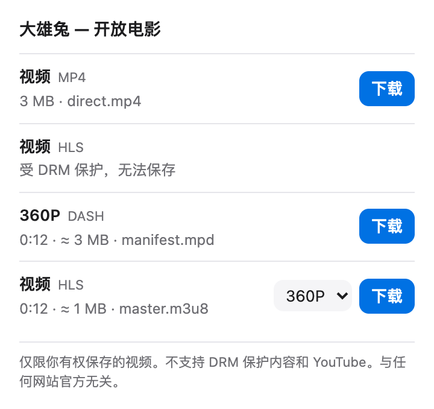

免费 Chrome 插件 · m3u8 · DASH · MP4 · B 站
找到视频，
存成文件。
Spool 发现网页加载的视频，一键保存为文件。流在浏览器内合并，不经服务器，不收集数据。

Spool 是什么？
Spool 是一款免费开源的浏览器插件，适用于 Chrome 和 Edge，用来把网页里的视频保存为文件。网页播放时，Spool 会识别视频直链以及 HLS（m3u8）和 DASH（mpd）流。点开图标、选清晰度、点下载：分片在浏览器内下载并合并成一个 MP4，不重新编码。在 B 站，它提供你自己账号能播放的全部清晰度。Spool 没有服务器，不收集任何数据。
一个列表，一个按钮。
网页加载的视频，都能直接保存。
视频直链
MP4、WebM、MOV、MKV、FLV、MP3、M4A，原样保存。
HLS（m3u8）
列出全部清晰度。支持 TS 和 fMP4 分片、独立音轨、AES-128 加密。
DASH（mpd）
支持编号或时间线模板、SegmentList 和单文件。
B 站最高画质
登录账号能播放的全部档位，大会员最高 4K、8K。
多长都行
边下边写入磁盘，两小时的电影和短片占用一样少的内存。
数据不出浏览器
无服务器、无账号、无统计。只连接视频所在的网站。
Spool 不做什么
边界清楚，是有意为之。
DRM 保护的视频
Netflix、Disney+ 等 Widevine、PlayReady、FairPlay 内容会标为受保护。Spool 不接触密钥，也不碰浏览器的 DRM 模块。
YouTube
Chrome 应用商店不允许 YouTube 下载器，Spool 完全忽略 YouTube。
付费墙和登录限制
Spool 只看得到页面已经为你加载的内容。直播流会列出，暂不录制。
如何下载网页视频
装好之后，三步完成。
播放视频
打开网页并开始播放。Spool 图标上的数字是发现的视频数。
选清晰度
点开图标。HLS、DASH 和 B 站可在菜单里选清晰度。
下载
点「下载」。文件存到下载文件夹，以网页标题命名。
安装
Spool 还没上架 Chrome 应用商店，需用开发者模式加载，一分钟即可。
获取代码
下载 ZIP 并解压，或 clone 仓库。
开启开发者模式
打开 chrome://extensions（Edge 用 edge://extensions），打开「开发者模式」。
加载插件
点「加载已解压的扩展程序」，选择 spool 文件夹。
适用于 Chrome、Edge 等 Chromium 浏览器 116 及以上。
权限说明
每一项，以及为什么。
读取网络请求
用于在网页加载时识别视频响应。只按标签页保留地址、类型和大小，关闭即清空。
设置 Referer
很多视频服务器要求带上原网页作为 Referer。只作用于 Spool 自己的请求。
下载与存储
保存完成的文件，并在本次浏览器会话中保留列表和进度。
常见问题
关于 Spool 的常见问题。
怎么在 Chrome 里下载 m3u8 视频？
安装 Spool，播放视频，然后点 Spool 图标。视频流会连同清晰度一起列出，选好后点「下载」。Spool 会下载分片、按需解密 AES-128，保存为一个 MP4。
Spool 免费吗？
免费。Spool 以 MIT 许可开源，没有广告、账号或付费版本。
Spool 能下载 YouTube 吗？
不能。Chrome 应用商店不允许 YouTube 下载器，Spool 会忽略 YouTube 页面和它的视频请求。
能下载 Netflix 等 DRM 保护的视频吗？
不能。Spool 能识别 Widevine、PlayReady、FairPlay 保护并标为受保护，不接触密钥，也不碰浏览器的 DRM 模块。
Spool 会收集数据或上传视频吗？
不会。Spool 没有服务器。发现的视频列表只在本次浏览器会话中保存，文件直接进你的下载文件夹。
B 站怎么下载最高画质？
在 B 站视频页，Spool 用你自己的登录状态向 B 站请求清晰度列表，和播放器一样。清晰度以账号权限为上限，从不解锁。
为什么保存成 MP4？
HLS 和 DASH 由很多小分片组成。Spool 不重新编码，直接把它们合并成一个标准 MP4，画质与原始流一致，任何播放器都能打开。